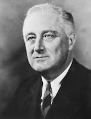

posted by Winston Churchill
I would say to the House, as I said to those who have joined this Government: I have nothing to offer but blood, toil, tears and sweat. We have before us an ordeal of the most grievous kind. We have before us many, many long months of struggle and of suffering. You ask, what is our policy? I can say: It is to wage war, by sea, land and air, with all our might and with all the strength that God can give us; to wage war against a monstrous tyranny, never surpassed in the dark, lamentable catalogue of human crime. This is our policy. You ask, what is our aim?
I can answer in one word: It is victory, victory at all costs, victory in spite of all terror, victory, however long and hard the road may be, for without victory, there is no survival.
posted by Franklin Roosevelt
I am certain that my fellow Americans expect that on my induction into the Presidency I will address them with a candor and a decision which the present situation of our people impel. This is preeminently the time to speak the truth, the whole truth, frankly and boldly. Nor need we shrink from honestly facing conditions in our country today. This great Nation will endure as it has endured, will revive and will prosper. So, first of all, let me assert my firm belief that the only thing we have to fear is fear itself—nameless, unreasoning, unjustified terror which paralyzes needed efforts to convert retreat into advance. In every dark hour of our national life a leadership of frankness and vigor has met with that understanding and support of the people themselves which is essential to victory. I am convinced that you will again give that support to leadership in these critical days.
In such a spirit on my part and on yours we face our common difficulties. They concern, thank God, only material things. Values have shrunken to fantastic levels; taxes have risen; our ability to pay has fallen; government of all kinds is faced by serious curtailment of income; the means of exchange are frozen in the currents of trade; the withered leaves of industrial enterprise lie on every side; farmers find no markets for their produce; the savings of many years in thousands of families are gone.
 
About this Blog
This is a starter template to help you create your first Tinderbox blog.
Key Links